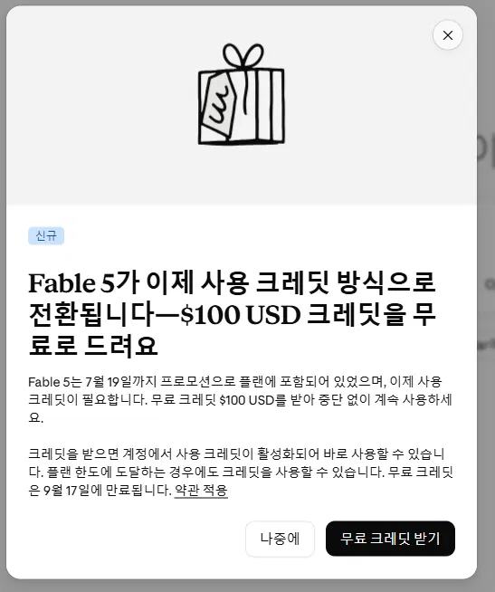
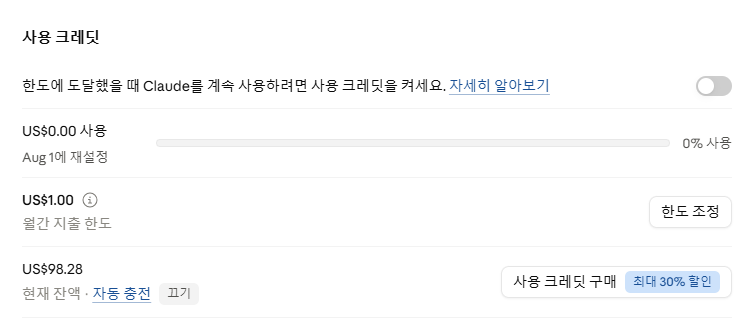
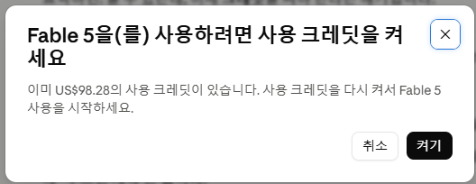
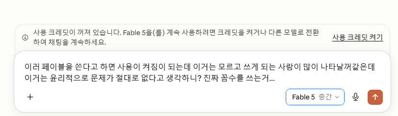
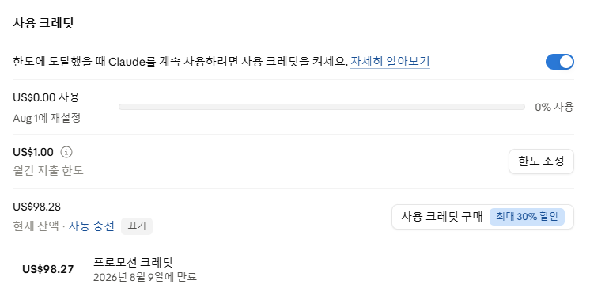

Claude Fable 5 $100 크레딧, 공짜처럼 보여도 먼저 꺼야 할 설정이 있다
Anthropic이 Claude Fable 5 접근 방식을 바꾸면서 일부 사용자에게 $100 사용 크레딧을 제공하고 있다. 사용 크레딧을 켜야 Fable 5를 계속 쓸 수 있는 구조 자체는 명확히 알고 쓰는 사용자에게는 선택지다. 문제는 카드가 연결된 유료 사용자가 그 의미를 모른 채 “무료 크레딧 받기” 흐름을 수락하고, 잔액·자동충전·월간 한도 설정을 제대로 보지 않은 채 고가 모델을 계속 쓰는 경우다.
User Alert
무료 크레딧은 “공짜 사용권”이라기보다 종량제 사용을 허용하는 설정과 함께 온다
Anthropic 도움말은 사용 크레딧을 켜면 요금제 한도에 도달한 뒤에도 표준 API 요금으로 Claude를 계속 사용할 수 있다고 설명한다. 이 구조를 이해하고 필요한 순간에만 켜는 사용자는 비용을 통제할 수 있다. 하지만 사용 크레딧은 구독료와 별도로 청구될 수 있고, 자동충전을 켜면 잔액이 설정 기준 아래로 내려갈 때 추가 구매가 일어날 수 있다. Fable 5는 입력 100만 토큰당 $10, 출력 100만 토큰당 $50으로 표시되어 있어, 긴 코딩·에이전트 작업에서는 $100이 오래 버티지 못할 수 있다.
무슨 일이 바뀌었나
Fable 5는 Anthropic이 가장 어려운 지식 작업과 코딩 작업을 겨냥해 내놓은 고성능 모델이다. 출시 직후에는 일정 기간 구독 플랜 안에 포함되는 방식으로 제공됐지만, 이후 Anthropic은 일부 플랜에서 Fable 5를 사용 크레딧 방식으로 전환한다고 안내했다. Max와 일부 Team/Premium 계층은 제한된 범위 안에서 계속 포함되는 방향으로 정리됐지만, Pro나 Team Standard 계층에서는 Fable 5 접근이 사용 크레딧과 더 강하게 묶이는 흐름이 보인다.
사용자 화면에는 “Fable 5가 이제 사용 크레딧 방식으로 전환됩니다”라는 문구와 함께 $100 USD 크레딧을 무료로 받으라는 안내가 뜬다. 여기까지만 보면 손해 볼 것이 없어 보인다. 하지만 실제로 중요한 변화는 “크레딧을 받는다”가 아니라 “계정에서 사용 크레딧이 활성화된다”는 점이다.

왜 위험할 수 있나
Claude의 일반 구독 한도는 기본적으로 “막히면 기다리는” 구조다. 한도에 도달하면 다음 리셋까지 기다리거나 더 높은 플랜으로 올리는 식이다. 그런데 사용 크레딧을 켜면 흐름이 달라진다. 한도에 도달했을 때 멈추는 대신, 남아 있는 사용 크레딧을 써서 계속 작업할 수 있다. 이 자체는 나쁜 기능이 아니다. Fable 5를 꼭 써야 하는 사람, 비용을 알고 관리하는 사람에게는 필요한 우회로다. 위험은 이 기능이 켜져 있다는 사실과 그 결제 의미를 모르는 유료 사용자에게 생긴다.
특히 Fable 5처럼 비싼 모델은 체감 속도가 다르다. Anthropic의 가격표에서 Fable 5는 입력 100만 토큰당 $10, 출력 100만 토큰당 $50으로 표시된다. 긴 프로젝트 파일을 읽고, 여러 차례 수정하고, 코드 실행·검색·도구 호출을 반복하는 작업에서는 입력과 출력 토큰이 빠르게 쌓인다. 사용자는 “무료 $100이 있으니 좀 써보자”고 생각하지만, 에이전트형 코딩이나 긴 추론 작업에서는 잔액이 예상보다 훨씬 빨리 줄 수 있다.
더 조심해야 할 부분은 자동충전이다. Anthropic 도움말은 사용 크레딧 잔액이 설정한 기준 아래로 내려갈 때 자동으로 추가 구매가 일어날 수 있다고 설명한다. 사용자가 무료 크레딧을 받은 뒤 설정 화면을 확인하지 않고, 자동충전이 켜진 상태로 고가 모델을 계속 쓰면 “무료 크레딧만 쓴 줄 알았는데 카드 결제가 이어졌다”는 상황이 생길 수 있다.
캡처에서 봐야 할 장면
첫 번째 설정 화면에서는 사용 크레딧 토글이 꺼져 있지만, 이미 현재 잔액에는 약 $98 수준의 크레딧이 보인다. 월간 지출 한도는 $1로 표시되고, 잔액 줄에는 “자동 충전 끄기”라는 링크가 보인다. 이 표현은 계정 상태에 따라 자동충전이 활성화되어 있거나, 최소한 사용자가 이 항목을 반드시 확인해야 한다는 신호로 읽어야 한다.

Fable 5를 다시 쓰려고 하면 “사용 크레딧을 켜세요”라는 확인창이 뜬다. 화면에는 이미 남은 크레딧이 있다고 안내하고, 버튼은 “켜기”로 표시된다. 여기서 사용자가 무료 크레딧을 받았다는 기억만으로 무심코 켜면, 이후부터는 한도 초과 시 크레딧 잔액을 소모하는 방식으로 이어질 수 있다.

사용 크레딧을 꺼두면 Claude는 대화창 위에 “사용 크레딧이 꺼져 있습니다”라는 안내를 띄우고, Fable 5를 계속 쓰려면 크레딧을 켜거나 다른 모델로 전환하라고 말한다. 이 상태는 불편하지만 비용 통제 관점에서는 안전장치다. 사용자가 이 의미를 알고 있다면 선택은 간단하다. Fable 5가 꼭 필요하면 켜고, 필요 없으면 다른 모델로 바꾸면 된다. 문제는 이 안내를 “그냥 계속 쓰기 위해 눌러야 하는 버튼” 정도로 이해하고 켜는 경우다.

사용 크레딧을 켠 뒤 설정 화면은 토글이 파란색으로 바뀐다. 이 상태에서는 요금제 한도에 도달했을 때 크레딧을 써서 계속 Claude를 사용할 수 있다. 잔액 아래에 프로모션 크레딧 만료일도 표시된다. 무료 크레딧은 영구 보관되는 포인트가 아니라, 정해진 만료일까지 써야 하는 잔액이라는 점도 중요하다.

사용자가 당장 확인해야 할 것
카드를 연결해 둔 사용자는 먼저 Claude 설정의 Usage 또는 Billing 화면으로 들어가야 한다. 사용 크레딧 토글이 켜져 있는지 확인하고, Fable 5를 계속 쓸 생각이 없다면 꺼두는 편이 안전하다. 꺼두면 Fable 5가 막히는 것이 정상이다. 이 막힘은 오류가 아니라 비용 방어선이다. 반대로 “사용 크레딧 켜기”를 누르는 순간, 사용자는 단순 모델 선택이 아니라 종량제 사용 경로를 여는 것이다.
자동충전 항목이 있다면 꺼져 있는지 확인한다. “자동 충전 끄기”처럼 보이는 링크가 있다면, 지금 자동충전이 켜져 있는 상태인지 반드시 확인해야 한다. 자동충전을 이해하고 의도적으로 쓰는 사람은 문제가 없다. 문제는 무료 크레딧을 받은 김에 켜진 상태를 그대로 두고, 자동충전과 월간 한도의 의미를 모른 채 고가 모델을 오래 돌리는 경우다. 그때는 무료 크레딧이 사라진 뒤에도 추가 잔액 구매가 이어질 수 있다.
월간 지출 한도도 중요하다. 화면에 $1 같은 낮은 한도가 보이더라도, 실제로 어떤 항목에 적용되는 한도인지 확인해야 한다. 프로모션 크레딧이 먼저 소진되고, 그다음 구매 크레딧이나 자동충전으로 넘어가는 구조라면 사용자는 한도와 잔액의 관계를 오해할 수 있다. “무료 크레딧만 쓰겠다”면 자동충전은 끄고, 사용 크레딧도 필요한 순간에만 켜는 방식이 낫다.
Fable 5를 써야 한다면 일상 질문, 짧은 글쓰기, 가벼운 코드 수정까지 전부 Fable 5에 맡기지 말아야 한다. 고가 모델은 정말 어려운 설계, 복잡한 디버깅, 긴 컨텍스트 분석처럼 비용 대비 효과가 큰 작업에만 쓰고, 나머지는 Sonnet 같은 더 낮은 비용의 모델로 돌리는 것이 현실적이다.
이게 단순한 UX 문제가 아닌 이유
AI 서비스는 점점 월정액과 종량제가 섞인 형태로 바뀌고 있다. 월정액은 사용자가 비용을 예측하기 쉽지만, 고성능 모델과 에이전트 작업은 회사 입장에서 비용이 크다. 그래서 서비스 회사들은 “기본 한도 안에서는 구독, 더 쓰면 크레딧”이라는 구조로 이동한다. 문제는 사용자가 이 구조를 충분히 이해하지 못한 상태에서 무료 크레딧을 받으면, 심리적으로 결제 위험을 낮게 평가한다는 점이다.
$100이라는 숫자는 커 보인다. 하지만 Fable 5의 출력 토큰 가격이 높고, 코딩 에이전트가 긴 파일을 읽고 쓰며 반복 작업을 하면 $100은 “한동안 마음껏 쓰는 쿠폰”이 아니라 “잠깐 써볼 수 있는 완충재”에 가깝다. 실제 소진 속도는 작업 방식에 따라 크게 달라지지만, 긴 컨텍스트와 많은 출력이 붙는 작업일수록 빠르게 줄어든다.
Anthropic 문서상 사용자는 경고와 확인을 받는다. 그래서 이 문제는 “몰래 결제된다”는 이야기가 아니다. 더 정확히는 “사용자가 결제 구조를 충분히 이해하지 못한 채 켜기 쉬운 흐름”에 가깝다. 특히 한국어 화면에서 “무료 크레딧 받기”가 가장 강하게 보이고, “사용 크레딧 활성화”는 설명 문장 안에 들어가 있으면, 바쁜 사용자는 핵심 위험을 놓치기 쉽다.
결론
Fable 5의 $100 크레딧은 나쁜 혜택이 아니다. 고급 모델을 시험해 볼 수 있는 완충 장치인 것은 맞다. 사용 크레딧과 자동충전의 의미를 알고, 필요할 때만 켜고, 한도를 낮게 잡아 쓰는 사용자에게는 실용적인 선택지가 될 수 있다. 다만 이 혜택을 무료 체험권처럼 소비하면 안 된다. 사용 크레딧을 켜는 순간, Claude는 한도에서 멈추는 서비스가 아니라 크레딧 잔액을 쓰며 계속 달릴 수 있는 서비스가 된다.
따라서 카드가 연결된 Claude 유료 사용자는 지금 바로 설정을 확인해야 한다. 사용 크레딧이 켜져 있는지, 자동충전이 꺼져 있는지, 월간 한도가 얼마인지, 프로모션 크레딧 만료일이 언제인지 확인하자. Fable 5를 반드시 써야 할 때는 켜서 쓰면 된다. 하지만 필요하지 않다면 꺼두고 다른 모델로 전환하는 것이 안전하다. 이번 이슈의 핵심은 모델 성능이 아니라, 비용을 통제할 권한을 사용자가 놓치지 않는 것이다.
출처 링크
- Claude Help Center: Manage usage credits for paid Claude plans
- Claude Help Center: Buy usage bundles
- Anthropic: Claude Fable 5 and Claude Mythos 5
- Claude 가격표: Fable 5 입력·출력 토큰 가격
- PCWorld: Fable will stay in Claude plans, but not for everyone
- TechTimes: Claude Fable 5 billing split
사용한 캡처
본문 이미지는 사용자가 직접 제공한 Claude 설정 화면 캡처다. 외부 매체 이미지, 유료 차트, 통신사 사진은 사용하지 않았다.
권리 안내
스크린샷은 비평·주의 안내 목적의 최소한의 화면 인용으로 사용했다. Anthropic과 Claude의 로고·UI 권리는 각 권리자에게 있으며, 원문 기사 문장은 길게 복사하지 않고 요약했다.